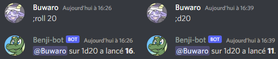
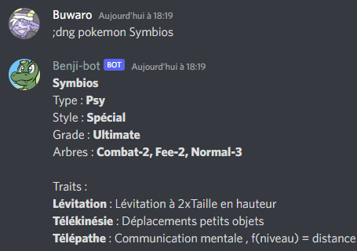
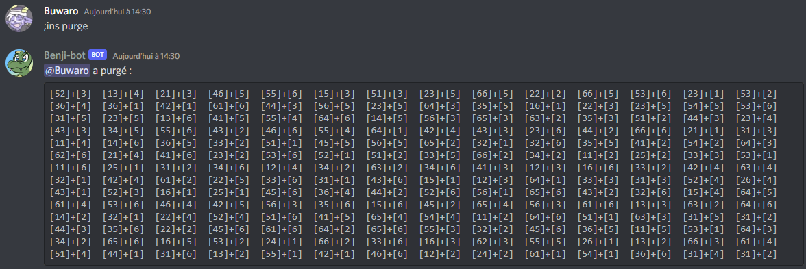
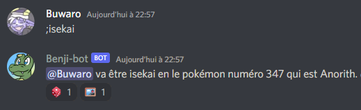

Tout d'abord, si vous voulez lancer un dé à 100 faces, faîtes juste ;roll ou ;r et ça lancera le lancer par défaut.

Pour lancer juste un dé, vous pouvez faire soit ;r nombre de faces, soit ;d20
Vous pouvez lancer plusieurs dés avec soit ;r nombre de dés d nombre de faces, soit faire des calculs comme ;r 2d20 - 5.
Si plusieurs dés sont lancés, les lancers sont mis entre crochets pour pouvoir mieux les distinguer entre eux, et des eventuelles nombres inclus dans le calcul.
![;r d20 + d10 devient &rarr sur 1d20 + 1d10 a lancé [18] + [3] , ce qui donne 21.](images/roll_3.png)
![;r 2d20 - 5 devient &rarr sur 2d20 - 5 a lancé [17, 15] - 5 , ce qui donne 27.](images\roll_4.png)
Le premier lancer correspond au jet de caractéristique, le dé lancé correspond à votre stat. Pour une action normale, le jet est une réussite si ce jet est supérieur à 3. (soit 4 ou plus)
Le second lancer correspond au jet de critique, plus le lancer est haut, plus la réussite ou l'échec est importante, en général un 19 ou un 20 vaut une réussite ou échec critique. (des effets peuvent augmenter les chances de faire un critique, de 17 à 20 voire même de 13 à 20)
Si un échec a un petit lancer de critique, il peut devenir une réussite si vous avez un avantage. Avec un avantage, un échec devient une réussite si le lancer de critique est entre 1 et 4. L'inverse est aussi vraie pour les petites réussites. Si il y a un avantage et un désavantage, les deux s'annulent mutuellement. Il est possible de cumuler plusieurs avantages, mais ils doivent provenir de sources différentes. Lors du lancer il n'est pas possible d'avoir plus de 3 avantages ou 3 désavantages.
Pour faire un lancer, la commande est ;dng votre stat. Si un effet vous demande de lancer deux jets de caractéristique, la commande est ;dng votre stat 2.
![;dng 3 devient &rarr avec une stat de 3, a lancé [2] [14].](images/dng_1.png)
![;dng 3 2 devient &rarr avec une stat de 3, a lancé [5, 3] [11].](images/dng_2.png)
Si vous avez des difficultés à appréhender les résultats des jets, vous pouvez faire ;dng autocheck. Cela indiquera à chaque lancer si le lancer est une réussite ou non.
Cependant, avant de lancer, vous devez vous assurer de savoir si le degré de difficulté est bien de 3, sinon vous devez rajouter après la stat dd niveau de difficulté.
Si vous bénéficiez d'un ou plusieurs avantages, il faut rajouter + nombre d'avantages, même chose si vous avez des désavantages, mais avec un - à la place du +.
Les jets d'initiatives servent à déterminer qui agit en premier lors d'un combat. Pour en lancer un, la commande est ;dng ini votre stat d'instinct (espace) votre stat d'agilité.
Pour départager les égalités, un troisième dé peut-être lancé. Pour rendre le jeu plus fluide, le bot lance un dé qui détermine les dixièmes.
![;dng ini 3 4 devient &rarr sur 1d8 + 1d10 + 1d9 / 10 a lancé [1] + [3] + [9] / 10, ce qui donne 4,9.](images/dng_3.png)
Au cours de votre aventure vous avez la possibilité de faire éclore puis évoluer votre puissance cachée.
Du point de vue du gameplay, votre jauge de puissance cachée est de 4 + votre échelon. L'échelon détermine aussi le niveau des dés que vous lancez.
Vous pouvez puiser dans votre jauge pour améliorer votre lancer, il est amélioré de 1 pour chaque point dépensé si vous le faîtes avant le lancer, ou de 1 pour chaque deux points dépensés si vous le faîtes après.
Si vous dépensez votre dernier point de cette manière, le bonus est doublé, mais avoir sa jauge de puissance cachée à zéro fait que vous tombez au sol comme si vous aviez perdus tout vos PV. La jauge se remplit du quart de sa valeur maximale (arrondi à l’inférieur) par repos complet
Pour réussir une imprégnation, il faut faire plus que 5, pour réussir sa puissance cachée de son thème principal, en général il faut faire plus que 10, et plus que 14 pour un thème secondaire. Une imprégnation coûte un point de jauge, le reste est à déterminer avec le MJ.
Pour le lancer, la commande est ;dng pc votre échelon (et éventuellement) + le nombre de points supplémentaires que vous dépensez
![;dng pc 4 +2 devient &rarr sur 2d6 + 2 a lancé [6,3] + 2, ce qui donne 11.](images/dng_4.png)
Si vous avez le moindre doûte sur votre fiche, n'hésitez par à vérifier la fiche de votre espèce avec la commande ;dng pokemon votre espèce.
Si vous avez besoin de la description complète d'un trait, la commande est ;dng trait le nom du trait.

Ces deux commandes bénéficient d'une correction orthographique, donc n'ayez pas peur de vous tromper ou d'abréger les traits trop longs. Si vous avez écrit le nom correctement mais que le bot ne renvoit pas le bon pokémon, il est fort probable qu'il ne soit pas dans le pokédex de DnG.
;dng trait permet aussi d'afficher la liste complète des traits.
;dng permet de tirer un pokémon de base au hasard si vous ne savez pas qui prendre.
Les lancers sont constitués de trois dés à 6 faces. Les deux premiers dés correspondent à si le jet est une réussite ou non, plus le jet est bas, mieux c'est. Le troisième dé correspond au degré de réussite ou d'echec, plus le jet est élevé, plus l'effet est fort. Lors de l'affichage du résultat, les deux premiers dés et le troisième sont séparés pour faciliter la lecture.
Pour les réussites/echecs critiques, pour les démons une réussite critique correspond à un triple 6, et un échec critique un triple 1. Et inversement pour les anges. Pour les humains, la réussite critique correspond à un triple 3 et les triples 1 et 6 à des échecs critiques.
Pour faire un lancer, la commande est ;ins
Pour déterminer si un jet est réussi ou pas, il faut se référer à la Table Unique Multiple, regarder sa stat, puis éventuellement compter des colonnes de bonus ou de malus. Cependant ce procédé est relativement long, c'est pour ça qu'il existe une commande pour automatiquement voir à partir de quelle stat l'action réussie. C'est ;ins autocheck, après ça tout vos jets appraitront comme ça.

![;ins devient &rarr [15] + [1]. Réussite quelque soit la stat.](images/ins_3.png)
Si vous avez un bonus de colonne, la commande est ;ins + nombre de colonnes. Si vous avez un malus de colonnes, remplacez le + par un -. Si vous n'avez pas activé la vérification automatique, la commande est ;ins check.
![;ins check -4 devient &rarr [22] + [2]. Réussite avec une stat d'au moins 2+.](images/ins_5.png)
Dans le cas d'une confrontation entre deux personnages, il est possible pour le MJ de demande un jet en opposition. Pour l'effectuer il faut utiliser ;ins opposition, cela affiche la différence de stat nécessaire pour que le jet réussisse.
Pour que le jet réussisse, il faut que la stat soit un moins supérieur de 0,5 à celle de son adversaire. (par exemple 2+ vs 2.)
Pour que le jet réussisse, comme le jet est excellent, la stat peut être inférieure jusqu'à 2 points de celle de son adversaire. (par exemple 2 vs 4.)
Etant donné que les critiques sont rares, il est possible d'afficher un message personalisé quand un certain jet arrive.
Pour ajouter un message, la commande est ;ins message le lancer (comme par exemple 421) (espace) votre message. Vous pouvez mettre de la mise en forme ou des emotes tant que le bot est sur le même serveur où l'emote est hebergé.

Vous pouvez avoir accès aux messages que vous avez ajouté avec ;ins message liste, vous recevrez en privé vos messages, avec aussi, indiqué en italiques, les messages communs à tout le monde.

Vous pouvez supprimer un message avec ;ins message le lancer deletethis. (Par ailleurs si vous n'aimez pas un message par défaut, vous pouvez toujours envoyer un message vide à la place.)

Si vous dépensez vos PA en utilisant la roulette, il y a la commande ;ins gacha qui lance les deux dés et affiche ce que vous obtenez.
![;ins gacha devient &rarr a lancé au gacha [16] ce qui correspond à : Amélioration de pouvoir physique. Coût variable d’environ 3PA.](images/ins_10.png)
Si vous voulez vous défouler, il existe la commande ;ins purge qui vous lance 216 lancers en un coup.
Il est possible d'afficher la TUM avec ;ins tum.
Si pour quelconque raison vous voulez tricher sur votre lancer, la commande est ;ins cheat le lancer.
La commande ;ins aide permet d'afficher un rappel rapide des commandes.
Il est possible d'appeler le bot dans un salon vocal pour jouer des musiques proposées par les utilisateurs.
;musique permet de lancer le bot musical.
;pause permet de le mettre sur pause ou de le relancer.
;skip permet de passer à la musique suivante.
;stop permet d'arrêter le bot musical, il se déconnecte automatiquement après le générique de fin.
;terminer permet d'arrêter le bot musical après la fin de la playlist actuelle.
Quand le bot est lancé, la playlist ressemble à ça :
;chercher mot ou phrase permet de chercher une musique disponible dans le bot. S'il y a plus de 10 résultats, la réponse sera envoyé par MP.
;jouer numero de recherche / nom exact d'une musique permet de rajouter dans la playlist la musique demandée, si le bot n'était pas lancé il se lance. Le nom doit être tel qu'il apparait dans la playlist ou la commande rechercher.
Quand vous rajoutez une musique dans la playlist en cours, elle est rajoutée juste après la musique en train d'être jouée.
Comme vous pouvez le voir si dessous, il est plus simple d'utiliser ;chercher pour retrouver facilement une OST, puis ;jouer en utilisant le numéro mentionné dans la recherche.
Tout le monde est libre de proposer des musiques. Il est préférable de proposer des musiques de jeux vidéos.
La manière la plus simple est de donner à l'admin du bot une playlist youtube.
Le bot a été programmé pour jouer de préférence les musiques des personnes présentes dans le salon vocal, donc même si vous ne proposez qu'une dizaine d'OST vous les entendrez quand même régulièrement.
Il existe des commandes qui permettent d'utiliser les autres commandes de manière plus pratique. Pour la plupart, l'utilisation est ;nom-de-la-commande-meta [quelque chose] [la commande d'origine tel que vous l'utilisez]
Dans le cas où tout les joueurs ont besoin de faire le même jet, il est possible de faire ;everyone type du jet (le lancer), une emote apparaîtra en dessous du message, et cliquer dessus lancera les dés demandés. Cette commande fonctionne avec quasiment toutes les commandes du bot, y compris les jets d'INS et isekai.
Note : Pour Donjons et Groudon, étant donné que le nombre de faces dépend de la stat, à la place, il faut faire ;meta et cliquer sur l'un des nombres en réaction.
Si vous avez besoin de faire un lancer toutes les X minutes, c'est possible avec ;tempo [nombre de minutes] [la commande tel que vous l'utilisez], tel que ;tempo 60 roll 1d2.
Vous pouvez arrêter une commande en cliquant sur l'emote stop en réaction du message d'origine. Il est possible d'arrêter toutes vos commandes tempo avec ;tempo stop. La limite est de 100 lancers pour une commande.
Si vous voulez faire plusieurs fois la même commande, il est possible de faire ;répéter [nombre de messages à envoyer] [la commande tel que vous l'utilisez]. Evitez de demander plus de 5 fois la même commande ou d'en abuser.

Si vous utilisez une commande spécifique souvent, vous pouvez créer un raccourci. La commande est ;alias [nom du raccourci] [la commande tel que vous l'utilisez].
Si vous allez être le seul à utiliser cette commande, vous pouvez faire ;alias perso [nom du raccourci] [la commande tel que vous l'utilisez], pour que cette commande soit spécifique à vous. Cela est utile si vous voulez utiliser un nom déjà pris par quelqu'un d'autre.
Envoie un lien vers ce mode d'emploi. Certaines commandes ont un résumé du mode d'emploi, vous pouvez par example rajouter dng/ins/roll/isekai/musique.
Il est possible de se réincarner en pokémon avec la commande ;isekai. Pour restreindre la commande à une génération et/ou un type, il faut faire ;isekai type et/ou génération. (abrégé par gen et sans espace avant le numéro)
Si le pokémon lancé ne vous plait pas, vous pouvez en tirer un autre en cliquant sur l'emote dé en dessous de la réponse. Si vous n'êtes pas sûr de savoir quel pokémon c'est (ou voulez le voir), vous pouvez cliquer sur l'emote photo pour afficher la miniature et obtenir un lien vers son artwork.
Quand un jeu sort, les nouveaux pokémons sont d'abord cachés sous une balise spoiler pendant quelques semaines.
;isekai dernier permet de revoir le dernier ;isekai que vous avez fait. ;isekai liste permet de revoir le dernier de tout le monde.
Vous pouvez tirer au sort une équipe de pokémons avec la commande ;isekai roll [nombre de pokémons]. Si vous voulez 6 pokémons, vous pouvez juste taper ;équipe. Il est possible de chercher un tag en rajoutant [type/génération/autre*].
*La liste non exhaustive est : DnG, PasDnG, Base, Final, Starter, Starter+, Forme, Alola, Galar, Hisui, Paldea, Femelle, Mâle, Légendaire, Non-pokemon, Digimon.
La commande ;isekai et ;équipe peuvent-être fusionnées avec la commande ;menubestof. D'autres commandes secrètes existent.
Il a été rajouté récemment une fonction qui permet de vérifier régulièrement des mises à jour, cela est principalement utile pour les BD en ligne.
Pour chaque site internet, vous pouvez être notifié en cliquant sur , et annuler l'abonnement en cliquant sur .
Etant donné que cette fonctionnalité est encore en beta, il est pour l'instant recommandé de demander à l'admin du bot plus d'informations.
Si vous souhaitez recevoir un résultat en privé, il suffit juste de mettre deux point-virgule au début de la commande. Si vous souhaitez recevoir le résultat en privé ET que le MJ reçoive aussi le résultat, mentionnez le à la fin de la commande.
Il est possible de tirer des cartes de tarot avec ;tarot nombre de cartes à tirer.
Vous pouvez voir un récapitulatif des derniers jets effectués sur un canal dans les 5 dernières heures avec la commande ;stats. Dans le cas des jdr suivant : INS et DnG, ce récapitulatif sera accompagné de statistiques.
La commande trie les joueurs par ordre alphabétique. Si vous voulez mettre le MJ en dernier, vous rajoutez mj [pseudo].
Si vous voulez avoir des statistiques spécifiques pour une personne, vous pouvez faire ;stats joueur [pseudo].
Note : Le vrai nom de la commande est ;log nombre d'heures. Cela prend tout les rolls du serveurs, pour juste le canal il faut rajouter canal.
Attention, ces commandes peuvent éventuellement envoyer plusieurs messages si beaucoup de lancers ont été faits.
;ouija Crée une "phrase" avec des lettres aléatoires.
;lol tire un personnage de League of Legends. La liste a été mise à jour pour la dernière fois le 14 Novembre 2022, la liste sera très très occasionnellement mise à jour.
;ramoloss fait quelque chose, peut-etre.
13 Mai : Logs : Commande ;log pour afficher les derniers jets.
10 Mai : DnG : Possibilité de faire un roll en rajoutant une emote.
10 Mai : Isekai : Possibilité de faire un reroll en rajoutant une emote.
25 Avril : INS : Simplification de la commande pour indiquer des colonnes de bonus.
22 Avril : Rolls : Possibilité de faire n'importe quel lancer en faisant une commande genre ;d15.
17 Avril : DnG : Ajout d'un d9 pour départager les jets d'initiatives.
15 Avril : DnG : Mode d'emploi si quelqu'un fait juste ;dng ini.
15 Avril : DnG : Vérification orthographique pour les recherches de pokémons et traits.
12 Avril : DnG : Ajout d'un d9 pour départager les jets d'initiatives. Ajout de la commande pour rechercher un trait.
02 Avril : DnG : Ajout de la commande dex/pokemon rechercher un pokémon.
27 Mars : INS : Afficher la liste des messages persos ;ins message liste .